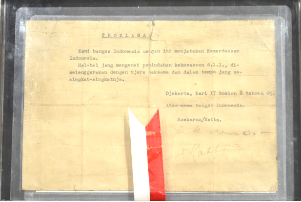
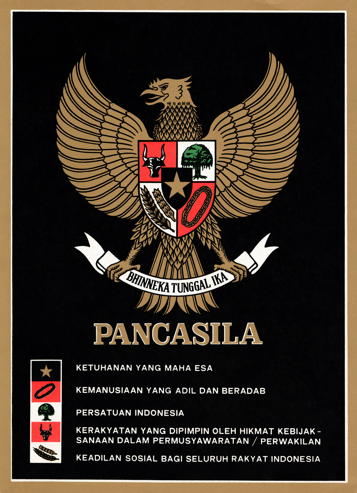

Dari fajar peradaban kuno, keagungan kemaharajaan maritim Sriwijaya dan Majapahit, heroisme perjuangan melawan kolonialisme, hingga detik sakral Proklamasi 17 Agustus 1945.
Pilih era atau gunakan kolom pencarian untuk mendalami setiap tonggak bersejarah yang membentuk jati diri bangsa Indonesia.
Mengenang para pejuang, negarawan, dan pemikir yang mendedikasikan jiwa dan raganya demi kedaulatan Ibu Pertiwi.
Jumat, 17 Agustus 1945 pukul 10.00 WIB di Jl. Pegangsaan Timur No. 56, Jakarta Pusat. Lahirnya negara merdeka, berdaulat, dan bermartabat.

Lambang kemegahan negara yang memadukan keutuhan nilai spiritualitas, kemanusiaan, persatuan, demokrasi musyawarah, dan keadilan sosial.

Uji wawasan kebangsaanmu melalui kuis interaktif berikut dan dapatkan lencana penghargaan sejarah nusantara!
Memuat hasil...